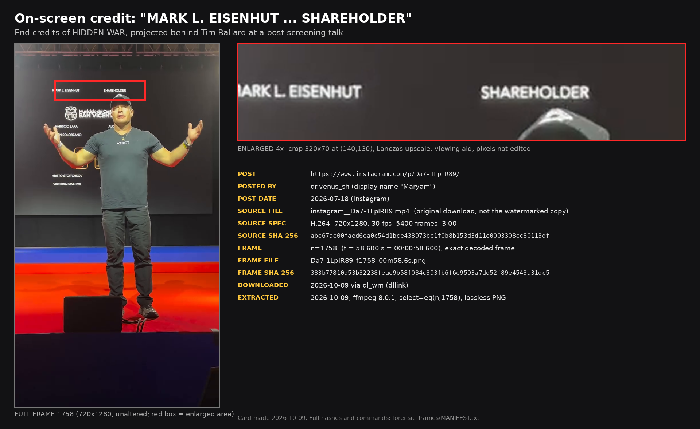

"Shareholder"
The end credits of Hidden War, as projected at a screening in July 2026, list Mark L. Eisenhut of the law firm Call & Jensen as "Shareholder."

What the video shows
The video (instagram.com/p/Da7-1LpIR89, 3:00) opens on Tim Ballard on stage just after a screening of Hidden War. For the first minute and a half the film's end credits scroll on the screen behind him. Each organisation's logo appears with names on the left and roles on the right.
Under the Call & Jensen logo (est. 1981) there is one name, Mark L. Eisenhut, with the role "Shareholder." The logo is clearest at 0:51 (frame 1530). Ballard's head covers the word at 0:57, and the whole line is readable at 0:58.6 (frame 1758).


In the talk Ballard says he has come "here to Europe," "right here on this island," and refers to "the Rupert Lowe report." The post is dated July 18, 2026.
Who Mark Eisenhut is
"Mark Eisenhut, an attorney for Ballard, said Tuesday his client stands by what he said in the video and may still sue the church."Robert Gehrke, The Salt Lake Tribune, October 8, 2026
The credits list a role and a firm, and nothing more. They do not say what "Shareholder" refers to: the film, a production company, or the firm itself. This page reports what is on the screen and nothing beyond it.
The other credits
Other organisations credited in the same sequence, in screen order:
| Logo | Names on screen |
|---|---|
| Fundación LigaPro (Ecuador) | names cut off by the edge of the phone frame |
| Aerial Recovery | Britnie Faith Turner, Jeremy Locke, Marco Bava |
| Free A Girl | Evelien Holsken, Priya Soekhai |
| Call & Jensen | Mark L. Eisenhut ("Shareholder") |
| Municipio del Cantón San Vicente | Fabricio Lara, Rubén Solórzano |
| Hristo Stoitchkov | Hristo Stoitchkov, Viktoria Pavlova |
| Blue Light Media Group | Pedro Blanco-Uribe, Nevil Guerra, Ricardo Espinoza, Elizabeth Hernández, Diego Ritoque |
| Cloud9 Studios, Etereo Films | logos only |
Ballard stands in front of the right-hand column for much of the sequence, so many roles are partly hidden. The full by-eye reading, with timestamps and the uncertain lines marked: CREDITS_READ_BY_EYE.md.
How the frame was taken
The video was downloaded on October 9, 2026. Frames were taken from the original download, not from a watermarked or re-encoded copy. Each one is an exact decoded frame by index (H.264, 720×1280, 30 fps), saved as a lossless PNG with no scaling, cropping or overlay. The enlarged view on the card is a 4× Lanczos upscale of a 320×70 crop, and is a viewing aid only.
Source video SHA-256: abc67ac00faed6ca0c54d1bce438973be1f0b8b153d3d11e0003308cc80113df
Frame 1758 SHA-256: 383b77810d53b32238feae9b58f034c393fb6f6e9593a7dd52f89e4543a31dc5
Every hash and the exact commands: MANIFEST.txt.